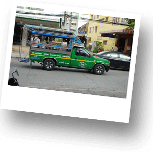

Транспорт в Хуа Хине
Хуа Хин – небольшой город, но тем не менее транспортная инфраструктура развита в Хуа Хине очень хорошо. Для Вашего удобства существует несколько видов транспорта, благодаря которым у Вас есть возможность передвигатьсяпо городу.

Муниципальные маршрутные такси
Очень удобный и доступный вид транспорта. Стоимость проезда 10 Бат. Это открытые пикапы зеленого цвета. Маршрутные такси имеют несколько маршрутов, но самый популярный и актуальный маршрут от горы Као Такиаб (Khao Takiap) до городского аэропорта Хуа Хина. Маршрут проходит вдоль всей улицы Печкасем. Вы можете в любом месте остановить маршрутное такси и отправиться в путь.
Муниципальные автобусы
Они обычно зеленого или красного цвета, маршруты их следования проходят по главной улице Печкасем. На бортах автобуса обозначен маршрут следования. Например, Хуа Хин – Пранбури, Хуа-Хин – Ча-ам. Стоимость проезда в автобусах от 10 бат.
Тук-тук
Очень колоритный и в большей степени туристический вид транспорта. Увидеть тук-тук можно повсеместно. Тук-тук не имеет определенного маршрута и везет Вас туда, куды Вы попросите. Стоимость проезда достаточно высокая. Например от торгового центра Market Village (центральная часть города) до горы Као Такиаб (Khao Takiap) (южная часть города) цена в зависсимости от времени суток колеблется от 200 до 300 Бат.
Такси
В Хуа Хине нет общепринятых такси со счетчиком, но некоторые местные жители в частном порядке занимаются извозом. Стомость в данном случае обсуждается с водителем индивидуально так же, как и маршрут. Помните о том, что местные жители в Хуа Хине в большинстве своем очень плохо говорят на английском языке и не всегда хорошо ориентируются по карте. Поэтому вполне вероятна попасть в ситуацию, когда водитель Вас не сможет правильно понять.
Мото-такси
Очень распространенный вид передвижения в Таиланде. Удобен особенно, во время большого количества машин, когда на дорогах образуются пробки. Опытные и профессиональные водители мото-байков быстро доставят Вас в указанное место за очень приемлемую цену.
Вело-рикши
Колоритный вид транспорта, расчитанный исключительно на туристов. На вело-рикшах можно передвигаться лишь на небольшие расстояния и лучше всего это делать утром или вечером, когда на улице не так сильно жарко. Стоимость и маршрут обгавариваются индивидуально.